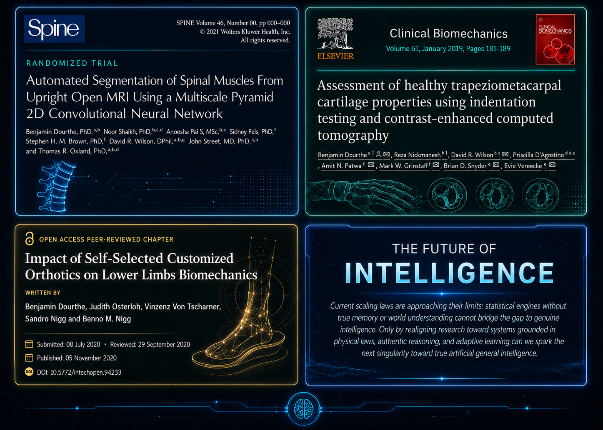
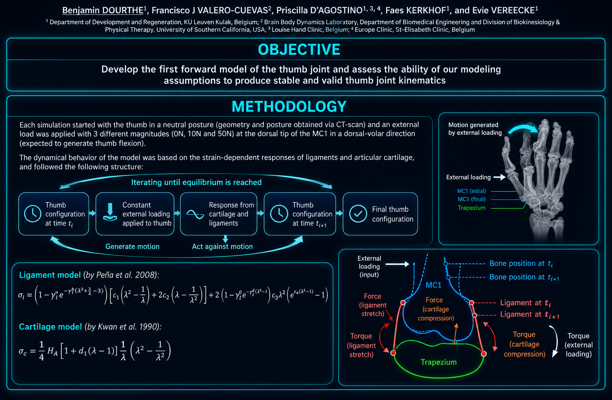
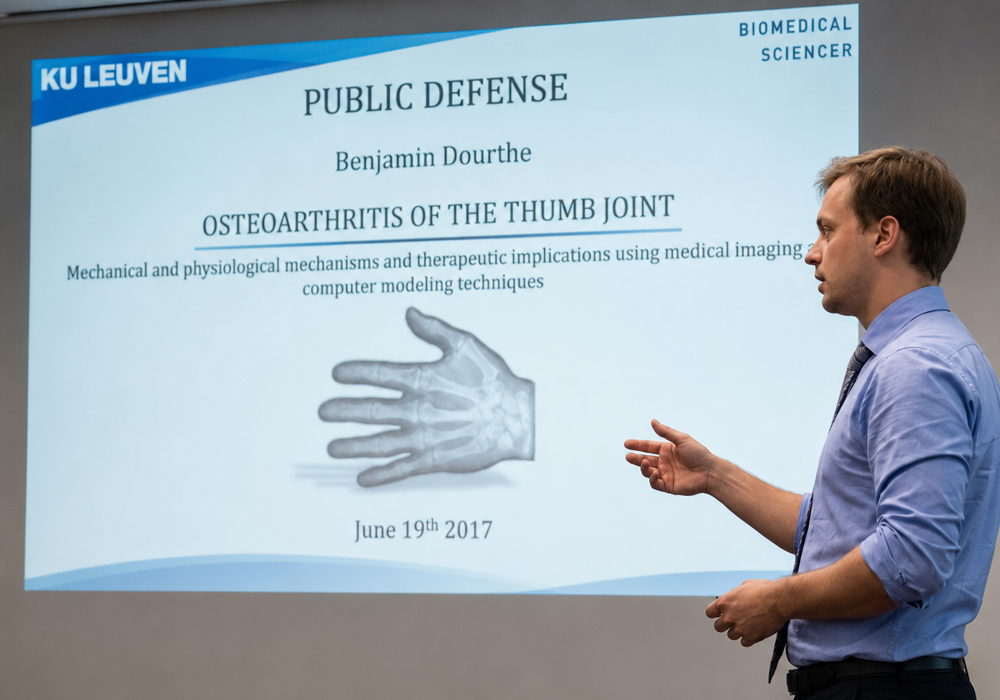

Turning complex technical work into clear decisions, reproducible practice, and shared understanding
Communication is part of the engineering system, not a final polishing step. Documentation, scientific evidence, presentations, and training are structured so each audience can find the right level of detail, verify the reasoning, and act with confidence.
Scientific Publishing & Presentations
Scientific communication must make the conclusion and the path to it inspectable. Publications preserve methodological depth and traceability; presentations reorganize the same evidence into a visual sequence for explanation, review, and discussion.
Peer-Reviewed Articles

Technical precision that survives peer review
A strong article gives the argument a visible spine: the question motivates the method, the method defines the evaluation, and the evidence supports a bounded conclusion. Consistent terminology, notation, figures, and references let specialists reproduce the reasoning and locate uncertainty.
Scientific Presentations

A visual path from question to implication
A presentation must work at two distances: the audience needs an immediate takeaway, while reviewers need enough detail to interrogate the method. Clear hierarchy, annotated diagrams, restrained text, and purposeful repetition support both rapid comprehension and close inspection.
Public Speaking & Audience Adaptation
The same evidence requires different framing for a public audience, a delivery team, an executive decision-maker, or a domain expert. The entry point, vocabulary, examples, and evidence density change without changing the facts.
Public Speaking

Confident delivery anchored in a clear argument
Strong delivery gives the audience a clear route through the evidence. The argument is signposted, methodological credibility is made explicit, technical language is calibrated in real time, and observation is separated from interpretation and implication. Questions become part of the narrative rather than an interruption.
Audience Engagement
One evidence base, three communication contracts
Audience-aware communication starts with the decision the listener must make, the context they already hold, and the uncertainty they need to see. The message changes in emphasis, not in truth.
Training materials
- Sequenced guides with prerequisites and checkpoints.
- Worked examples that connect practice to concepts.
- Exercises that progress toward independent application.
Learning outcomes
- Learners can explain a concept and recognize its limits.
- Teams can reproduce the method in a realistic setting.
- Knowledge becomes an observable decision or practice.
Technical Documentation & Communication Workflows
Effective documentation begins with the reader, not the format. The audience's required understanding or decision determines the structure, writing style, evidence, diagrams, charts, examples, and level of detail.
Design the message around the decision
The format follows the reader's need. A general reader needs context and a concrete analogy; an executive needs consequences, options, risk, and a recommendation; a technical team needs interfaces, constraints, examples, and acceptance criteria; and a scientific audience needs methods, uncertainty, and traceable evidence.